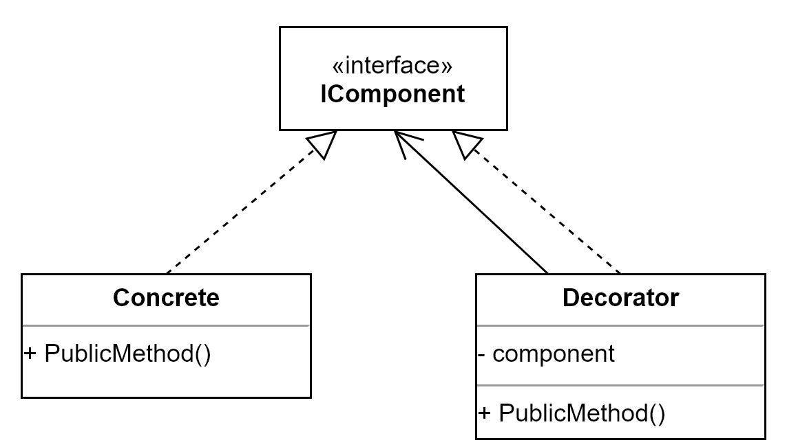

SOLID
A term describing a collection of design principles for good code that was coined by Robert C. Martin also known as Uncle Bob.

Disclaimer
These are principles, not laws!
Single responsibility principle

A class should have only one responsibility and there should be only one reason why you want to change the class.
What does that mean?
Do one thing and do it well!
Is this a violation?
%%{init: {'theme': 'dark', 'themeVariables': { 'darkMode': true }}}%%
classDiagram
class Person{
+String name
-save_db()
}
This Person class has two jobs?
Better?
%%{init: {'theme': 'dark', 'themeVariables': { 'darkMode': true }}}%%
classDiagram
Person <|-- PersonDB
class Person{
+String name
}
class PersonDB{
-save()
}
Guideline
Gather together the things that change for the same reasons. Separate those things that change for different reasons.

How to spot violations
If you describe what a piece of code does with an “AND”, it’s probably violating the principle.
Some signs of violations
-
If statements/switch statements where each case represent one responsibility/reasons to change
- Fix: extract the logic to a separate method or class
-
Monster methods that does more than one thing
- Fix: split it into multiple methods or classes that do just one thing
-
God class that contains everything in a single class
- Fix: split into specialized classes that handle clear use cases
Benefits
-
The code is easier to understand (does only one thing)
- We spend 90% of our time as software developer reading code, so it’s pretty important to be able to understand it and reason about it very fast.
- The code is easier to test (less test cases)
- The code is less fragile (changes are isolated) and therefore easier to maintain
- The code is more reusable (the code should be reusable without modification)
- The code becomes more decoupled
References
- React: https://konstantinlebedev.com/solid-in-react/
- https://ducmanhphan.github.io/2020-01-17-Understanding-about-SOLID-part-1/
- https://www.pythontutorial.net/python-oop/python-single-responsibility-principle/
- https://www.robertopiva.pro/2016/12/30/how-to-spot-single-responsibility-principle-violation.html
- https://www.linkedin.com/pulse/spotting-single-responsibility-violations-code-stuart-dobson/
- Patterns: https://ericbackhage.net/clean-code/solid-the-single-responsibility-principle/

A software module (can be a class or method) should be open for extension but closed for modification.
But what does that mean?
Simply, it means that if your business requirements change you shouldn’t modify the existing code (closed for modifications). Instead, you should add a new code that extends the existing code without affecting it (open for extension).
Is this a violation?
%%{init: {'theme': 'dark', 'themeVariables': { 'darkMode': true }}}%%
classDiagram
Person <|-- PersonStorage
class Person{
+String name
}
class PersonStorage{
-save_to_database()
-save_to_json()
}
class Person:
def __init__(self, name):
self.name = name
def __repr__(self):
return f'Person(name={self.name})'
class PersonStorage:
def save_to_database(self, person):
print(f'Save the {person} to database')
def save_to_json(self, person):
print(f'Save the {person} to a JSON file')
if __name__ == '__main__':
person = Person('John Doe')
storage = PersonStorage()
storage.save_to_database(person)
Better?
%%{init: {'theme': 'dark', 'themeVariables': { 'darkMode': true }}}%%
classDiagram
Person <-- PersonStorage
PersonStorage <|-- PersonJSON
PersonStorage <|-- PersonDB
class Person{
+String name
}
class PersonStorage{
-save()
}
class PersonJSON{
-save()
}
class PersonDB{
-save()
}
from abc import ABC, abstractmethod
class Person:
def __init__(self, name):
self.name = name
def __repr__(self):
return f'Person(name={self.name})'
class PersonStorage(ABC):
@abstractmethod
def save(self, person):
pass
class PersonDB(PersonStorage):
def save(self, person):
print(f'Save the {person} to database')
class PersonJSON(PersonStorage):
def save(self, person):
print(f'Save the {person} to a JSON file')
if __name__ == '__main__':
person = Person('John Doe')
storage = PersonDB()
storage.save(person)
Guideline
-
The object-oriented programming way to do this is using inheritance
- Create a subclass and override any desired methods and properties.
-
Realised through the usage of interfaces (hide every special implementation behind an interface)
- An elegant way to avoid breaking the principle, if applicable, is to use interfaces as parameters for classes and implement our logic using those interfaces (strategy pattern).

The purpose of the open-closed principle is to make it easy to add new features (or use cases) to the system without directly modifying (breaking) the existing code.
How to spot violations
You are violating this principle if you directly work with a concrete implementation instead of an abstraction. The violation becomes visible when you must extend existing code to accommodate new functionality.
Some signs of violations
- You have private methods that almost do the same thing (but with a slight variation in the implementation)
- You use (a lot of) ifs to control behavior, e.g. doing something the old way or the new way.
- You use an abstract class but check for the concrete implementation to control flow (methods that adjust logic based on instance types)
Warning?
Premature optimization can introduce uncessary complexity. If you extend the export class when you have just pdf then we are introducing unnecessary complexity
Benefits
- Reduce testing of existing code. The less you change the existing code, the less it would introduce new bugs.
- Reduce the cost of a business change requirement.
Template Method Pattern
Create an abstract class containing the base logic, and create implementations of it for different behavior. If you want to add new behavior, you simply create a new class, derive from the base class and add the functionality.
Decorator Pattern
If you want to extend functionality (do the original thing and something extra before and/or after) but not want to change the existing class.
Example in React
Example in React

Strategy Design Pattern
One way is to create an interface (or abstract class) for the behavior, implement the interface for a certain behavior and use the interface from the calling class.

The strategy design pattern is a great example that achieves the OCP in an elegant way. It is one of the most useful design patterns.
References
- https://blog.mayallo.com/open-closed-principle-the-hard-parts
- https://thevaluable.dev/open-closed-principle-revisited/
- https://stackoverflow.com/questions/59016/what-is-the-meaning-and-reasoning-behind-the-open-closed-principle
- https://www.devonblog.com/software-development/solid-violations-in-the-wild-the-open-closed-principle/
- https://ezzeddinabdullah.com/post/solid-principles-ocp-py/
- https://ericbackhage.net/clean-code/solid-the-open-closed-principle/
- https://www.devonblog.com/software-development/solid-violations-in-the-wild-the-open-closed-principle/
- https://waldemar.bearblog.dev/open-closed-principle/
- https://michalgodkowicz.medium.com/how-to-make-your-python-code-maintainable-with-the-open-close-principle-1860fecc8ec0

Objects in a program should be replaceable with instances of their subtypes without altering the correctness of the program.
What does that mean?
In simpler terms, subclasses must behave like base classes.
If S is a subtype of T, then objects of type T in a program may be replaced with objects of type S without altering any of the desirable properties of that program.
Typescript
const isEven = (x: number) : boolean => x % 2 == 0;
const isOdd = (x: number) : boolean => x % 2 == 1;
const printFiltered = (arr: number[], filterFunc: (int) => boolean) => {
arr.forEach((item) => {
if (filterFunc(item)) {
console.log(item);
}
})
}
const array = [1, 2, 3, 4, 5, 6];
printFiltered(array, isEven);
printFiltered(array, isOdd);
Benefits
- Security that an implementation can be replaced without changing its behavior.
- This principle aims to enforce consistency so that the parent Class or its child Class can be used in the same way without any errors.
Clients should not be forced to depend upon the interfaces that they do not use.
What does that mean?
Keep your interfaces the smallest you can. No client should be forced to depend on methods it does not use.
Guideline
Do not let interfaces become large in the first place and divide them into many small interfaces beforehand. This allows much more targeted interfaces to be defined externally.
Benefits
-
️
- This principle aims at splitting a set of actions into smaller sets so that a Class executes ONLY the set of actions it requires.
Dependency Inversion Principle

High level modules should not depend upon low level modules. Both should depend upon abstractions. Abstractions should not depend upon details. Details should depend upon abstractions.
What does this mean?
Objects should not instantiate their dependencies, but they should be passed to them.
Benefits
- It decouples the dependencies.
The principles
| Single responsibility | Don’t mix unrelated responsibilities |
| Open-closed | When adding new features, avoid doing a lot of changes in the existing code |
| Liskov’s substitution | When adding new features, avoid doing a lot of changes in the existing code |
| Interface Segregation | When using an interface, don’t make me implement methods that don’t make sense |
| Dependency Inversion Principle | Objects should not instantiate their dependencies, but they should be passed to them. |
STUPID
singleton invasion, tight coupling, untestability, premature optimization, indescriptive naming and duplication
http://slides.williamdurand.fr/from-stupid-to-solid-code/#/2
References
- https://camao-tec.com/en/solid-principles-easily-explained/
- https://www.pythontutorial.net/python-oop/python-open-closed-principle/
- https://medium.com/backticks-tildes/the-s-o-l-i-d-principles-in-pictures-b34ce2f1e898
- https://codeburst.io/understanding-solid-principles-open-closed-principle-e2b588b6491f